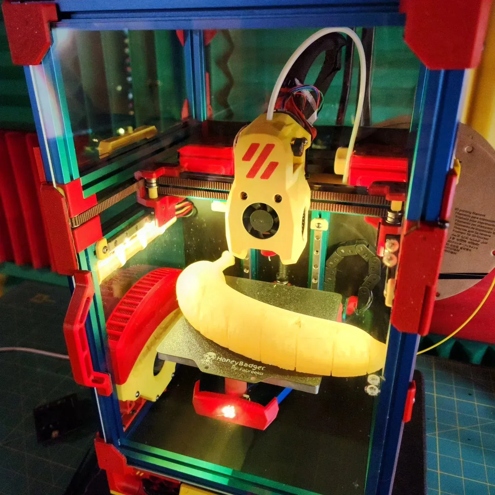

Build / setupVoron V0.2 build
Assembling a small, colorful Voron V0.2. Mechanical parts, electronics, and a banana for scale.
3D printing • Machine setup
The earlier printer setup: an Ender 3 V2, Raspberry Pi, and OctoPrint, before the later Voron and EffZero builds.
The January 2021 archive records bringing an Ender 3 V2 into the shop. By the following month, the project included setting up a Raspberry Pi to run OctoPrint.
This is setup, configuration, and printing on an existing printer platform. The calibration objects are reference prints, not claims of original model design.
Setup and prints: Michael Pytlowany. Creality printer, Raspberry Pi, OctoPrint, and existing calibration models are credited as platform/reference inputs.
The original adhesion observation remains a personal report, not evidence that OctoPrint alone caused a change.
Jerky_FPV project archive
2021-02-28
Mike's Functional Artistry Ender introduction
January 2021
KEEP EXPLORING

Build / setupAssembling a small, colorful Voron V0.2. Mechanical parts, electronics, and a banana for scale.
 Build / setup
Build / setupA blue-and-pink printer, a satisfying homing sequence, and a set of M8P-related parts shared on GitHub.
 Piece / project
Piece / projectGlass covers and printed PETG parts came together in an early Fusion-to-print project.
FROM THE TOOL CRIB